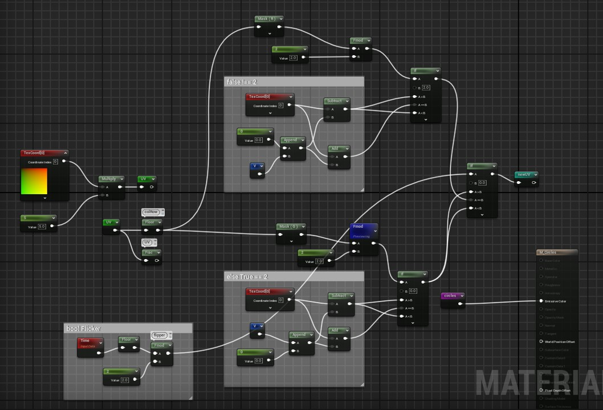
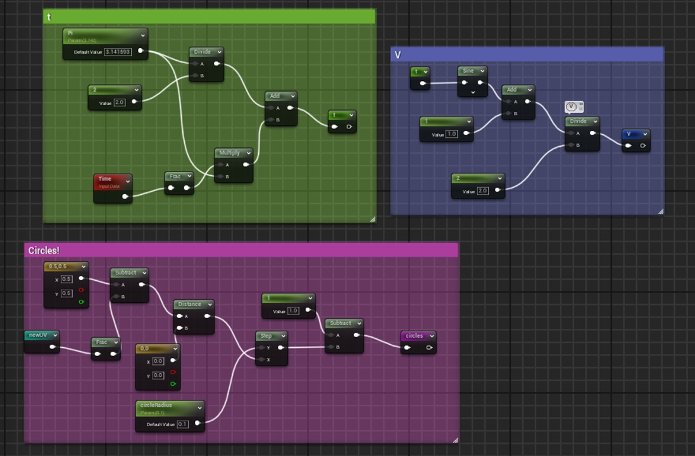
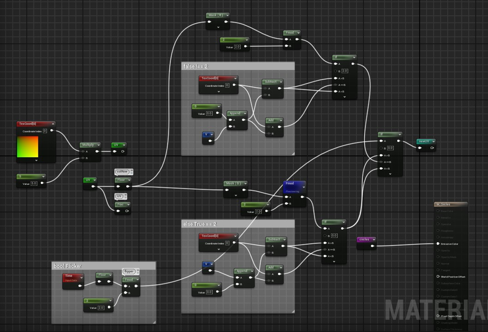
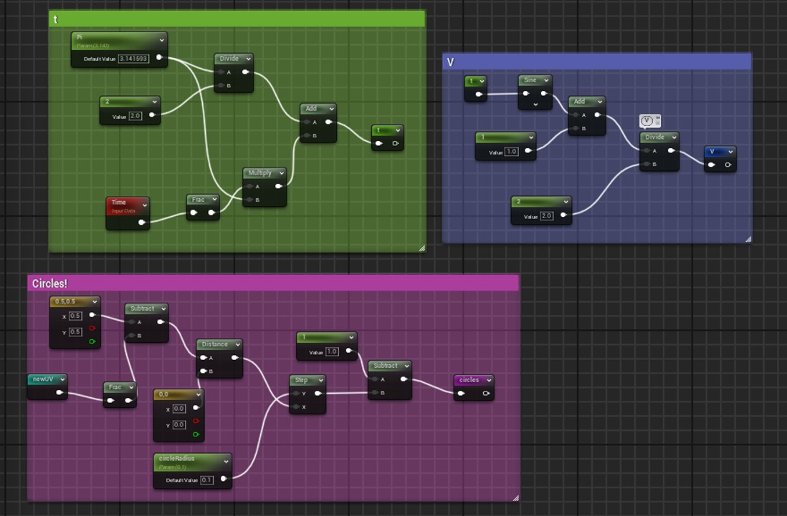

Programming Portfolio
Finite State Machine NPC AI
This project is my attempt at using finite state machines to allow NPCs to have different behavioural states to create a convincing free-thinking NPC, taking inspiration from Craig Reynolds's Boids programme to use basic rules to influence the NPCs' movement.
Polipus States
Active State - The polipus walks forward, and turning force is randomly
applied to the Polipus making it slowly turn in random directions while walking forward,
this is to simulate wandering. While the Polipus is walking around they leave behind a
trail of empty game objects, they will use this breadcrumb trail to find their way back
to the colony.
Seeking Food State - Taken inspiration from the cohesion rule presented by Reynold,
the Polipus has two radius raycast vision split down the centre, if a Food object
is spotted on the left or right the Polipus will start turning toward the
direction the food is hit on. And will leave the state if the food is out of sight,
switching back to the Active State or if the Polipus has collected the food, switching
to the Return State.
Return State - If the Polipus' energy meter is below 25 or
has collected food, it will begin to return back to the designated Colony by
following the trail they left during the Active State. Once reaching the Colony
it will deposit its food if it has collected any into the Colony Resource and
replenish its energy to max if below half, then finally switching to the Home State.
Home State - while in the Colony trigger, the Polipus will wait a short amount of
time idle inside the Colony, if there is another Polipus and the stored Food resource
is three to one Polipus', another Polipus will be spawned into the scene, then the
Polipus will resume to the Active State, repeating the cycle.
Inactive State - when a
Polipus fails to replenish its energy resulting in its energy meter going below 0, the
polipus will enter the inactive state, where no motion is taken and after 15 seconds
they will get destroyed and leave behind a food object in their place.
Timelaspe of Polipus AI
Here, you can observe the various behaviours in action: the Polipus roam in search of food, bring it back to the colony, and replenish their energy. When there is an excess of food, they breed, resulting in an additional Polipus.
Pheromone Trail Polipus AI
While in the Seek Food state, the Polipus NPC leaves a trail of pheromone GameObjects behind, which allows it to find its way back home after entering the Return state. Each pheromone GameObject has a lifespan timer. Once in the Return state, the Polipus will turn towards the pheromone trail GameObject that has the longest remaining lifespan.
Area Diversity City Procedural Generation
Here I created a procedural generation tool that utilizes Perlin noise algorithms combined with layering techniques, to create area diversity allowing the user to have more control on parameters in different zones.


Layered Perlin noise algorithm
Here was the main purpose of the project: to layer Perlin noise algorithms.
This was achievable with a nested if statement and the ability to change the parameters
of the threshold required for a building prefab to be instantiated in the two different
layers, the main green layer and the red second layer.
Doing it with nested if statements as the foundation of the code makes it easy to
expand to allow for more layers, as I would just need to add another nested if
statement to replace the desired layer, allowing for even more customisation available
to the user.
Raycast Check
I ran into a challenge when wanting to instantiate buildings that were bigger than
1x1 grid tiles, as I’d want them to instantiate as a whole segment without clipping or
ensuring the neighbouring buildings are correctly instantiated. To tackle this issue,
I decided to go with a raycast, going through a 'for each'; each building instantiation
checks its south and west to see what kind of building type is next to it, and from
that information and a set of rules, it will determine what building type will be
spawned in its place.
Before, I had it raycasting all four faces from a top-down view, but that was redundant
as the buildings on the north and east wouldn’t have spawned yet, so there was no
reason to check them, changing it to two raycasts optimised resources.
Shroomoban
Shroomoban is a 2D puzzle game inspired by Sokoban, a game where the objective is to push boxes into the correct slots, across a grid-like movement system.
Tackling movement and game mechanics
This was my first time attempting a tile-based movement, and to get it right I had
to ensure two main mechanics. Firstly, I had to make sure the player character was
limited to grid movement, and wasn't able to clip through blocks. With the second
mechanic, the ability to push boxes, not only by themselves but also in a group,
I had to make sure there were no bugs of boxes clipping into each other or the player
clipping out of the bounds of the game.
First, I wanted to use physics to move the player, but I found this unreliable
and it would require too many limits fighting the physics engine, so instead I
decided to transform the player's position precisely. This allowed me to do checks
before the movement to check if there is an object in the player's way, or a block
for the player to push. With this basic foundation, it allowed me to implement the
same logic to the boxes that the player is supposed to move.
Shader Programming
I coded 3D shapes using signed distance fields (SDFs) in HLSL and GLSL, including a sphere and a torus, complete with realistic shadows and specular highlights.
SDF Union
I utilised the opSmoothUnion function to merge two SDF spheres, creating a visually appealing blended shape. To introduce dynamic movement, I utilized a sine wave function to translate the green sphere towards the blue sphere over time
Heat Distortion Niagara Particle
Using node based shader programming
Panning noise lerped with a sphere mask
Dynamic parameter to create refractions
Heat distortion material set to Niagara fountain particle emitter
UV Moving Circle
Using node based shader programming
Circle is created by fracting distance from radius and
applied to the location of the UV, animating it
Created a flickering bool, by checking a flipping mod
Changes Uvs with nested if statement if bool is true or false
If true == 2 appending 2 uv rows intersecting them with time sin.
If false !== 2 uv collum moving up and down with time sin

 


